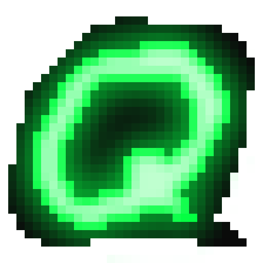

End-to-end encryption
Megolm via Vodozemac, cross-signing, and device verification — SAS emoji and QR. The same Rust crypto behind Element X.

quark// a matrix client
Quark drives Matrix with vim keys and a : command bar — in a real GUI window, so custom emoji, GIFs and stickers still render inline. End-to-end encrypted, by default.
The real Quark client, running in your browser with demo data — keyboard-driven, no install, no account. Try j/k and :theme.
or open full-screen in a new tab ↗Megolm via Vodozemac, cross-signing, and device verification — SAS emoji and QR. The same Rust crypto behind Element X.
Normal, Insert, Command and Visual modes. Every binding is remappable through a vimrc-style quarkrc.
MSC2545 im.ponies packs from rooms and your account. Type :shortcode: for inline previews. Plays nice with Cinny, FluffyChat, Nheko.
Giphy & Klipy built in. Picks are uploaded to your homeserver — never hot-linked — and sent as real images.
A Cinny-style icon strip with a stable, non-jumpy room list. :directory opens a searchable public-room browser.
Phosphor, amber, dracula, nord, gruvbox, solarized, catppuccin… TOML themes, switched live with :theme.
Pre-release v0.15.2. Grab an installer from GitHub Releases, or build it yourself.